# Create a new R script to save your analyses - give it a sensible name and save it somewhere sensible. e.g., GapminderAnalysis17062025.R in an "analyses" folder
#Load necessary libraries
library(ggplot2)
# If you have not already done so, load the gapminder data into a variable called gapminder
gapminder <- read.csv("gapminder_data.csv") lesson814
Lesson 8 - using ggplot2
Slide 2
- Make sure you have ggplot2 installed and the gapminder dataset we downloaded earlier
- Any housekeeping or other questions
Slide 3
What is ggplot2 and why should we use it?
- The “gg” in “ggplot2” is short for “grammar of graphics”, it is based on the idea of a layered grammar that you can use to build data visualisations.
- It provides us with a powerful and flexible way of exploring and plotting our data, and it makes it relatively quick and easy for us to produce readable and beautiful plots
- It has all of the broader advantages of working in R discussed earlier - it makes it easy to reproduce or repeat analyses, has a large open-source community, easily accessible help files and tutorials, etc.
Slide 4
What are the basics we need to know, to plot some data? Remember the key elements of a scientific figure - we need to represent data, in some way - in this case, using a line graph, in a plot defined by axes. Ideally the axes should have clear and precise labels, including units, and the figure will have a title and a legend. The details may differ, depending on the particular type of plot you are creating, but the key point is that you want to clearly present your data in a way that your audience will understand it.
Slide 5
Some tips before we get started:
- When it comes to your own data – think about what is the best way to plot it (and why)
- Keep in mind the conventions in your field (read broadly, look at the ways that other people visualise similar data)
- Don’t forget the principles previously discussed (e.g., version control, keeping data read-only, etc.)
Slide 6
Keep in mind the principles of good data visualisation - what you want to plot and how your reader will view the resulting figure you make.
You are in control of the way you present your data - don’t necessarily feel that you need to use a fancy new chart type or do something complicated just because you can.
Using ggplot2 will help you to use a lot of different types of plots, make sure you are always choosing the best plot for your data/the message you want to convey.
Slide 7
At its core, what ggplot2 does, is lets us use layers to build data visualisations. We need to have at least a dataset, a way of mapping that dataset onto the plot, and at least one graphical layer. It becomes very easy to add layers onto a plot to modify the output - many of the layers have sensible defaults, but you can change them as necessary to produce your desired result.
Slide 8
Some of the key concepts you will need to know to start using ggplot2 are geometry and aesthetics.
Geoms (short for geometries) are the fundamental building blocks for a plot - e.g., scatterplots, line graphs, box and whisker plots, etc.
Aesthetics are how the data appear visually - including what the position of a datapoint is on the x and y planes of your plot, or aesthetic elements like the colour, size and shape of the points.
Note that aesthetics can either be arbitrary (I can colour all the points on a graph blue), or they can be mapped to some feature on your data (I can colour all the points based on membership in some group).
Slide 9
- The basic process you need to follow to make a visualisation using ggplot2 is:
- Load the ggplot2 package
- Build up the command to construct a desired plot, specifying the data, mapping, and geom
- Add/edit layers as necessary by adding arguments to your command (this step can be iterative)
Overall,
- Try to keep your code tidy and readable
- break up long lines where helpful
- use comments where helpful
- Don’t be afraid to use a cheatsheet/Google
- Don’t be afraid to experiment
- Remember to design your plots for accessibility (most of the defaults will be sensible, but still need to keep accessibility in mind as you make design choices - colour, font size, etc.)
Live demo
Basic plots and layers
Arguments added to the ggplot function are global options (apply to all layers on the plot). So if we begin by calling ggplot and specify the data (gapminder), this information will be inherited by all subsequent layers.
ggplot(data = gapminder) # Call the ggplot function and specify our gapminder dataset. Note, this will only create a blank plot - we haven't actually specified anything about the plot itself
We have specified the data, but we need to tell ggplot2 what to actually plot. To do so, we need to connect (map) variables in the data to the aesthetic properties of the figure, using the aes (short for aesthetics) function.
ggplot(data = gapminder, mapping = aes(x = gdpPercap, y = lifeExp)) # Add a mapping aes to our ggplot function - this will create a plot with gdpPercap on the x axis, and lifeExp on the y-axis (note, we still haven't specified anything about how to plot the data)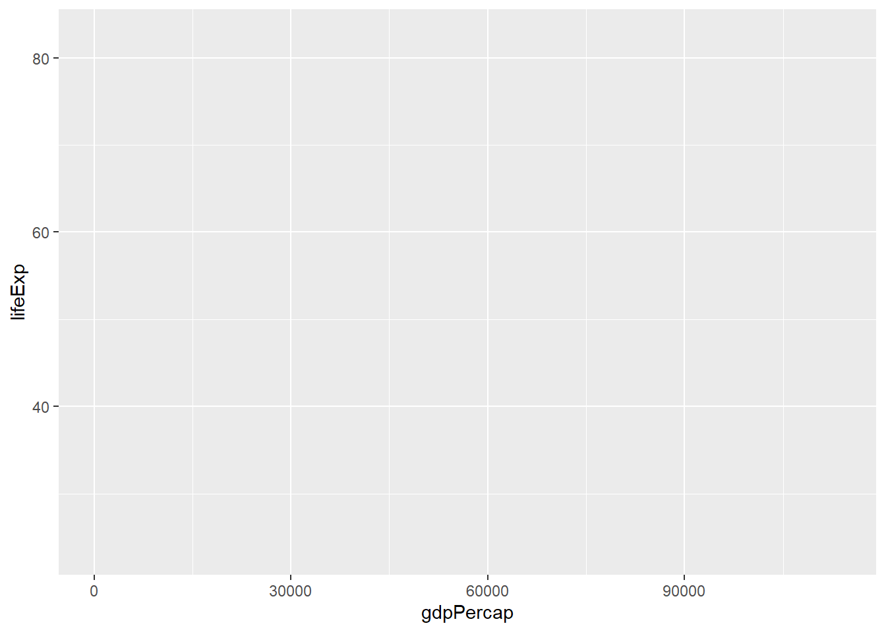
We then have to tell ggplot something about how we want to visually represent the data. We can add a new layer using one of the geom functions. In this case we’ll use geom_point() (but you’ll learn about many other geoms as you learn ggplot.
ggplot(data = gapminder, mapping = aes(x = gdpPercap, y = lifeExp)) +
geom_point() # this adds a geom (in this case, a scatterplot) to our plot
Challenge 1. How can we use ggplot to show how life expectancy has changed over time?
Click to see the answer
Remember, you can check the structure of the gapminder dataset if you don’t remember what the columns are called - for example, using head(gapminder). This will show you that there’s a column called year. You can then change your aes mapping, so that the year is displayed on the x-axis (instead of gdpPercap), so:
ggplot(data = gapminder, mapping = aes(x = year, y = lifeExp)) + geom_point()
Using Groups and Colours
aes can be used to change other aesthetic values for the plot - for example, the color, size, and shape of points, or the type and width of lines.
For example, we can colour the points in our plot based on continent:
ggplot(data = gapminder, mapping = aes(x = year, y = lifeExp, color=continent)) +
geom_point() # plots life expectancy by year as a scatterplot, and colours the points by continent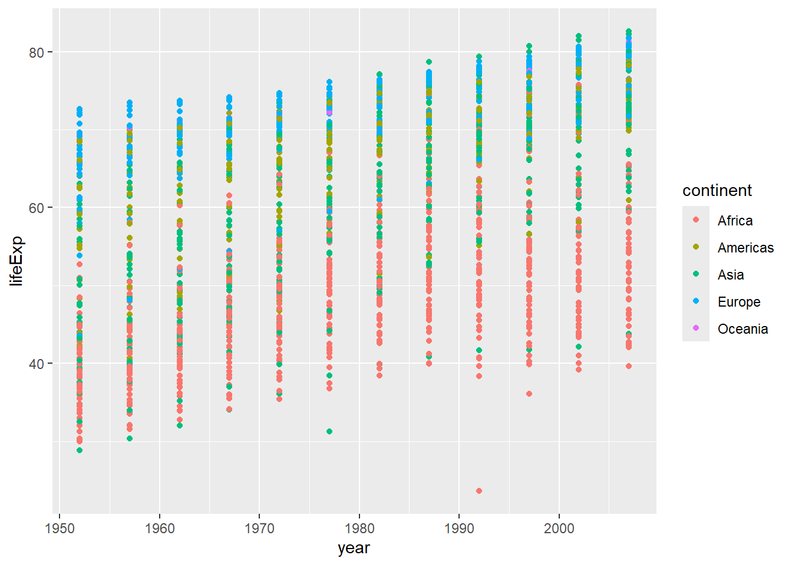
We can change the type of plot we make, by changing the geom we use. Here we are looking at life expectancy over time, so it might be sensible to use a line graph (the points are connected over time).
ggplot(data = gapminder, mapping = aes(x = year, y = lifeExp, color=continent)) +
geom_line() # plots life expectancy by year, colouring the lines and points by continent, as a line graph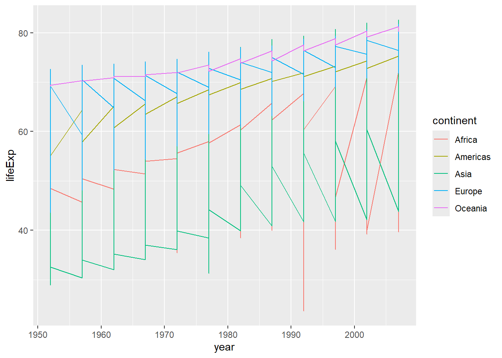
Why does this look so strange? Well, we have a lot of different values for each continent, so it makes the line jump around a lot. We can fix this by separating the data out by country (one line each). We do this by adding a group aesthetic (group=country). (Remember, if we do this in our initial ggplot2 command, it will be inherited in all the subsequent layers.)
ggplot(data = gapminder, mapping = aes(x = year, y = lifeExp, group=country, color=continent)) + geom_line() # plots life expectancy by year, grouped by country and coloured by continent, as a line graph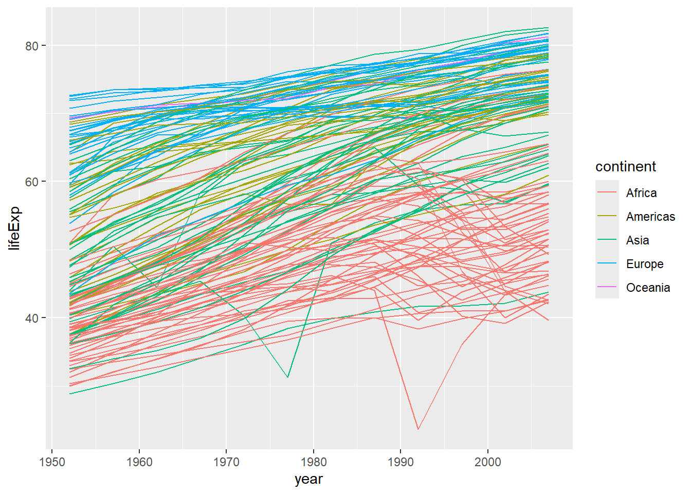
Note that we can very easily combine different plots (layers), and that these will be printed on top of one another in the order specified (here, the points will be printed on top of the line graph - if you wanted the opposite, you would have to reverse the order of the layers in your code.)
Modifying axes
One way that we commonly want to adjust the way our data is plotted, is to change the x- or y- axis (the scale itself, or the limits of the axes).
We can change the limits of the axis by adding a layer with scale_y_continuous as in the below example - here I’ve set it to some sensible values for ages (between 0 and 100).
ggplot(data = gapminder, mapping = aes(x=year, y=lifeExp, group=country, color=continent)) +
geom_line() +
scale_y_continuous(limits = c(0,100)) #set limits on the y-axis using scale_y_continuous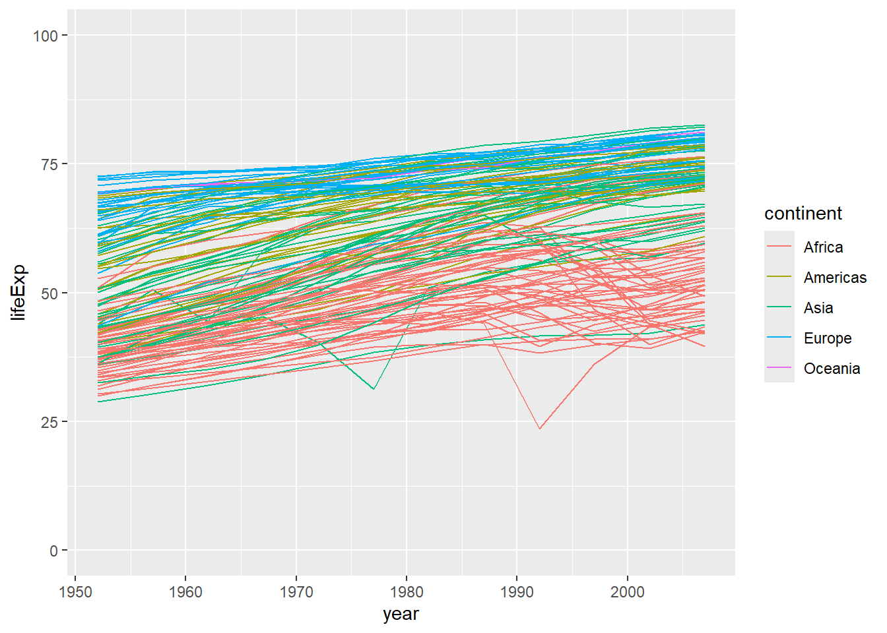
Or, if we were interested in looking only at certain years in our dataset, we could specify the limits of the x-axis using scale_x_continuous. (Note, this will show you an error message, informing you that some of your data aren’t being shown because they are outside the scale range.)
ggplot(data = gapminder, mapping = aes(x=year, y=lifeExp, group=country, color=continent)) +
geom_line() +
scale_x_continuous(limits = c(1970, 2000)) #set limits on the x-axis using scale_x_continuous (between 1970 and 2000)Warning: Removed 852 rows containing missing values or values outside the scale range
(`geom_line()`).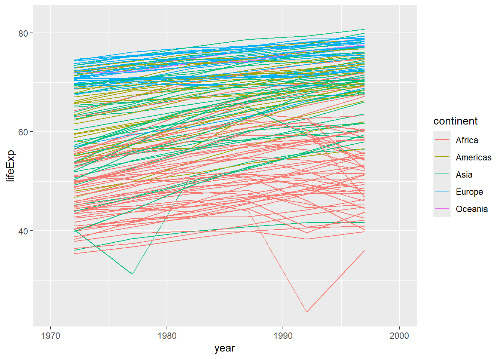
Or, for our previous example (the scatterplot of gdpPercap vs lifeExp), we might want to change the scale to a logarithmic scale (this can help to visualise these data more clearly). (Note we can also change the transparency of the dots using alpha which also helps when you have many points plotted on top of one another.)
ggplot(data = gapminder, mapping = aes(x = gdpPercap, y = lifeExp)) +
geom_point() #same plot as previously - scatterplot of gdpPercap vs lifeExp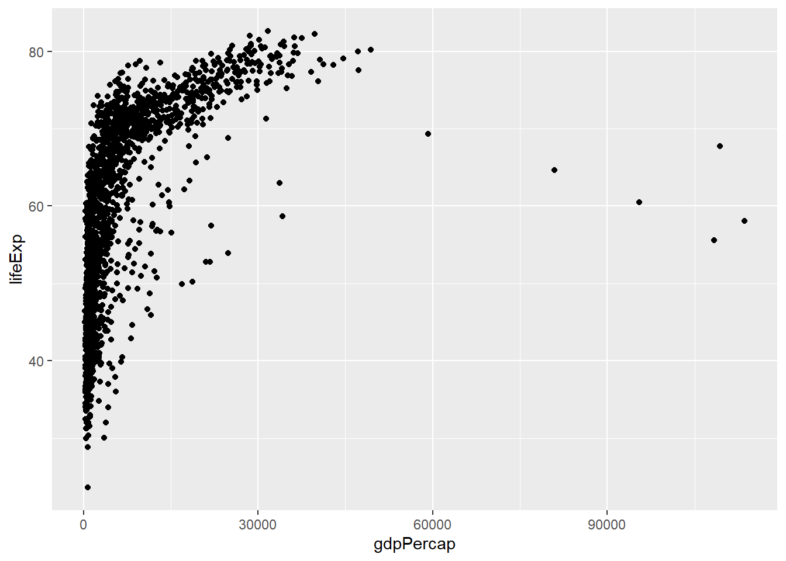
ggplot(data = gapminder, mapping = aes(x = gdpPercap, y = lifeExp)) +
geom_point(alpha = 0.5) + #modifies the transparency of the points; note that alpha takes values from 0 (more transparent) to 1 (more opaque)
scale_x_log10() #converts the x-axis to a logarithmic scale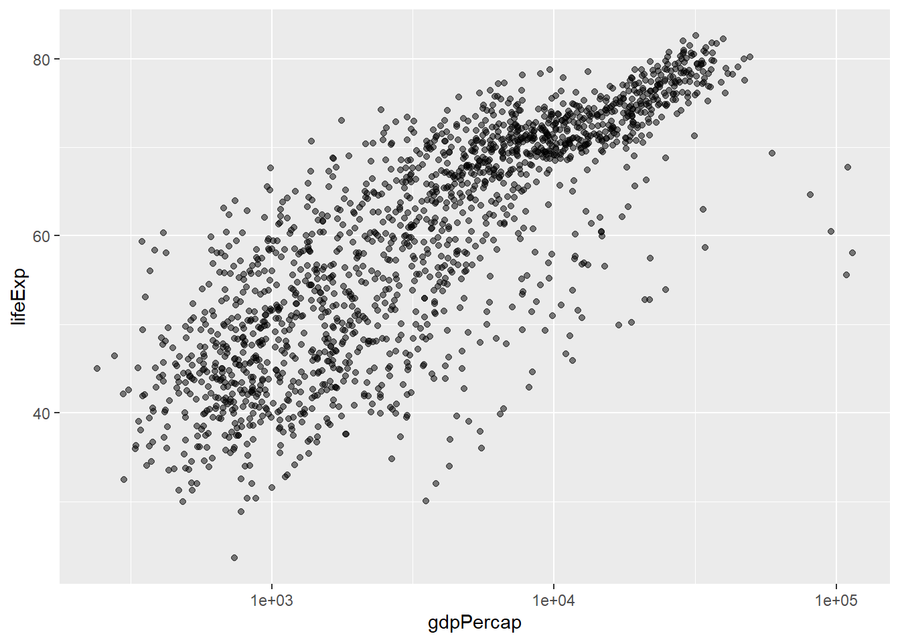
Always be cautious when changing the scale on a plot - you must make sure that you don’t end up misrepresenting your data or misleading the reader.
Facet Plots
Sometimes we want to split our data across several different plots - sometimes because it makes it easier to visualise, sometimes because we are exploring our data and find it easiest to do this by creating these facet plots.
americas <- gapminder[gapminder$continent == "Americas",] #subset data from the Americas
# build up ggplot command, pointing at the subsetted data(americas) and mapping x=year and y=lifeExp
# we will use facet_wrap to generate individual plots for each country
ggplot(data = americas, mapping = aes(x = year, y = lifeExp)) +
geom_line() + facet_wrap( ~ country) 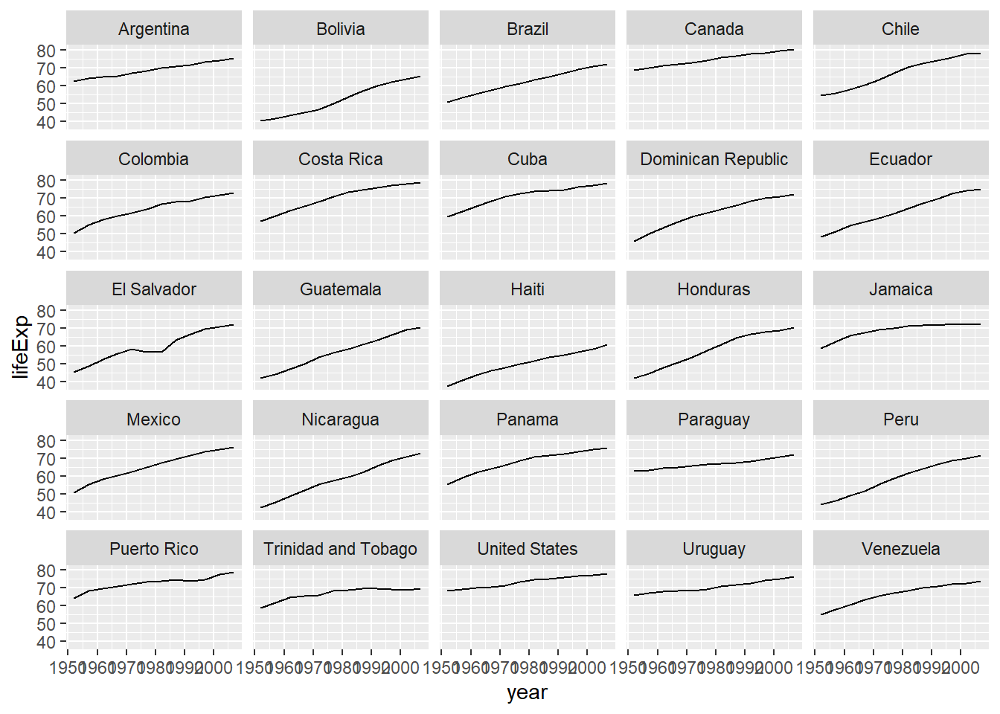
# note that the labels on the x-axis are a little difficult to read - we can rotate them by adding a theme)
ggplot(data = americas, mapping = aes(x = year, y = lifeExp)) +
geom_line() + facet_wrap( ~ country) +
theme(axis.text.x = element_text(angle = 45))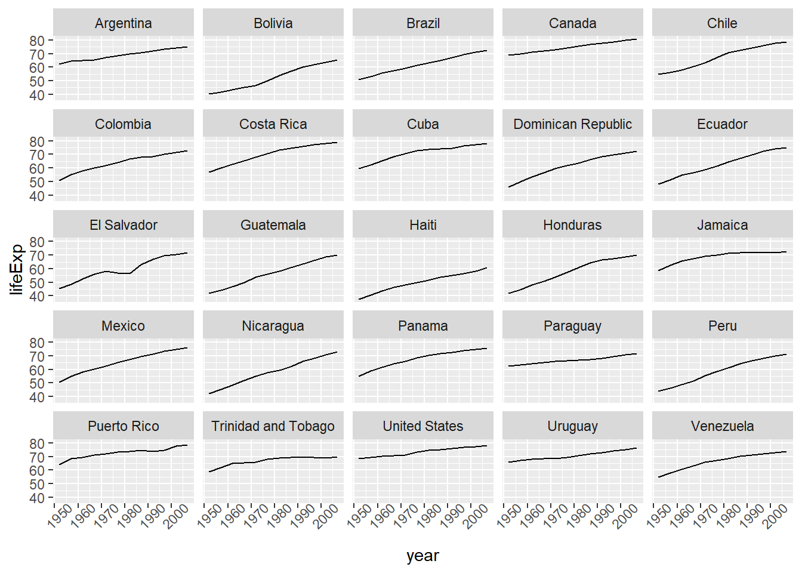
Labels
Remember, one of the key elements in making a plot (especially a plot that you want to use for publication), is ensuring that the elements in the plot are correctly and helpfully labelled. We can add or modify text labels using the labs function.
Themes and Design Choices
There are many other ways that you may wish to customize your plots using ggplot2. One very easy way to change the look of a plot is to use themes - for example, theme_dark(), theme_minimal(), theme_classic(), etc. Don’t be afraid to experiment with changing different themes and trying out different design choices - it is easy to modify (and unmodify) your plots as you go.
One thing you can do to make modifying your plots iteratively easier, is to save the results of the ggplot2 command to a variable - and then you can add onto that variable.
#save the results of the last command to a variable called plot
plot <- ggplot(data = americas, mapping = aes(x = year, y = lifeExp)) +
geom_line() + facet_wrap( ~ country) +
labs(
x = "Year", # x axis title
y = "Life expectancy", # y axis title
title = "Figure 1", # main title of figure
) +
theme(axis.text.x = element_text(angle = 45))
# Add a classic theme to our plot
plot <- plot +
theme_classic()
print(plot) # print the plot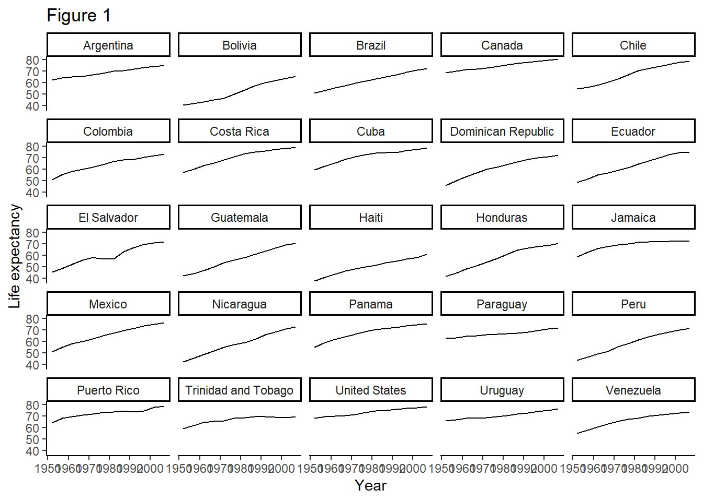
We also might want to modify individual parts of the plot (instead of using theme to change the overall appearance all at once). For example, we might want to make the plot more readable at a distance - if we wanted to make a plot for a PowerPoint presentation, for example.
Saving your work
Of course you will want to export your plots - you can do this using ggsave(). By default, this will export the most recent plot used, but you can also specify a particular plot (by using variables to save the plots in your environment, as we have just seen.)
Slide 11 - Lesson 8 Key Points
Lesson 14 - Reproducible Reports with knitr
Slide 13
Why use R markdown documents and knitr to produce reports?
It is a lot easier than writing in Word, and copying/importing your outputs from ggplot2 or other R Studio functions into your document, then saving as .pdf, submitting to the journal, etc.
It makes it much easier to keep your code and output together, so you can see exactly what code generated which figure.
It makes it really easy to share your work online, and in different formats.
You may find the RMarkdown cheat sheet helpful.
Live demo
- Create a new R markdown document
- Edit the header to specify title, author, date, and output e.g.,
title: “Initial R Markdown document” author: “Karl Broman” date: “April 23, 2015” output: html_document (inside the — symbols denoting a YAML header)
Note that in the document, there are code chunks (which knitr will execute).
Writing marked-up text:
- bold with double-asterisks
- italics with underscores
- code-type font with backticks
- headers using #s
Compiling the R markdown document using the “Knit” button. You can also compile to .pdf and other formats (but compiling to PDF may require an additional package like
tinytex.)Using code chunks Remember to give each code chunk a unique name Note, the initial document gives some illustrative code chunks with options like
includeandecho- you can modify the way that a code chunk behaves by specifying either specific options for that chunk, or global options for all the chunks in your document.
Slide 14 - challenge 2
Slide 15 - lesson 14 key points
This has been a very brief intro to using knitr, but you will learn more as you actually use it and figure out how to set different formatting and output options - don’t forget the cheatsheet!